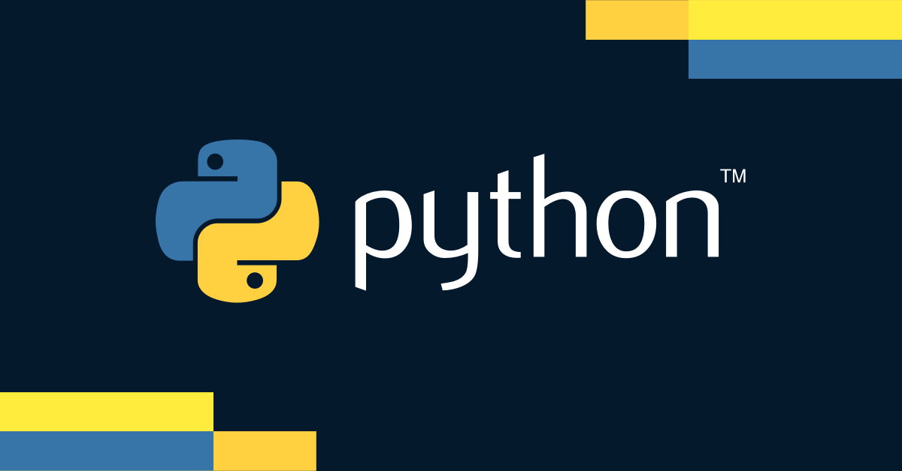

Python and High-level languages
Im going to dive into what is it like to start learning such language as a first programming language

I used to hear about it even when i was not actively learning how to program. Everyone said it was easy and it was the best. So when i decided to start learning programming with Python. and I think it was a good choice. I learned by taking the course Python by CS50. The langauge was easy and intuitive and it did not have any the weird syntax so it lead to a smooth learning prosess. I started doing small Projects and it was challenging at first to wrap my head around the programming concept but quicly i understood and i started making progress. trial and error while doing assigments and projects taught what i needed to know to mange the basics. i was rather greatfull to start and do everything in python. i have heard many horror stories about the awful syntax of other langagues.
i had fun solving logical issues and trying to figure the best way to solve the issue. and the infinite frustrating part of writing code in 15m and spending 3 hours debuging it with print functions.after sometime and progressing through the course i started to get a sense of the langauge and things started to be quite easy. i made the assigments rather quickly and didnt face any isseus. this will quickly change when i get intredouced to Object orinted programming.
Prior to the course i have never heard of OOP. When i started working on the assigments that was after the OOP lecture. i was facing a lot of trouble. suddenly things are not so clear and i had problem with the "getters" and "setter" for some reason i couldnt get them to working correctly. so after two days of endless frustration i manged to solve it by quite frankly a stupid solution but i didnt care i was very happy to be done with it. I said to myself i ll revisit it later and try to get a better solution. and i tried after. i had to write the whole thing over again.
after a month of programming everyday and spending hours debuging. i was happy to be done and looking forward to start something new. i wanted to do a sort of Instagram bot for my final project but soon i realized Instagram is not a fan of people using third party APIs and they kept banning my bot accounts and even banned my IP from making new accounts. Therefore i decied to change the direction of the project by making the user download the data from instagram and letting the program work it out. it was a success however i still wanna do the first version maybe at later time point. learning Python is alot of fun and there is alot to explore from third-party libaries. and it gave a good introduction to the logic of programming. altough im not the biggest fan now, after leanring C things start to make more sense and i fell in love with it. I do recommend pyhton to anyone who wants to dabble with programming.